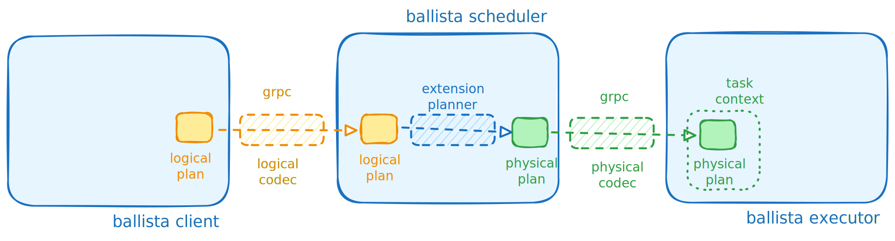

Extensions Example¶
This project demonstrates possible extensions mechanisms.
The goal of this small project is to enhance Ballista’s capabilities by providing new logical and physical operators, utilities, and integration tools to support additional data processing workflows.
This example will implement
sample()
operator which will return a sampled subset of original DataFrame:
let ctx = SessionContext::remote_with_state("df://localhost:50050", state).await?;
let df = ctx.read_parquet("data/", Default::default ()).await?;
// The `sample` operator, defined in this project,
// samples 30% of the data and displays the result.
let df = df.sample(0.30, None) ?;
To implement this functionality, it is necessary to implement new logical plan extension, physical operators and extend
DataFrame to expose new operator.
[!WARNING]
Please do not use implemented sampling operator for production, statisticians would not approve it, probably.
This demo will provide:
Custom DataFusion (logical and physical) nodes.
Logical and physical extension codecs.
Custom protocol buffer definitions.
Extension query planner.
Logical Plan Extension¶
The first step is to implement a custom logical plan extension:
//! This module defines the implementation of the `UserDefinedLogicalNodeCore` trait for the `Sample` logical plan node.
//!
//! The `Sample` node represents a custom logical plan extension for sampling data within a query plan.
//!
use std::{hash::Hash, vec};
use datafusion::{
error::DataFusionError,
logical_expr::{LogicalPlan, UserDefinedLogicalNodeCore},
};
#[derive(Debug, Clone, PartialEq, PartialOrd)]
pub struct Sample {
pub fraction: f32,
pub seed: Option<i64>,
pub input: LogicalPlan,
}
impl Hash for Sample {
fn hash<H: std::hash::Hasher>(&self, state: &mut H) {
self.seed.hash(state);
self.input.hash(state);
}
}
impl Eq for Sample {}
impl Sample {
pub fn new(fraction: f32, seed: Option<i64>, input: LogicalPlan) -> Self {
Self {
fraction,
seed,
input,
}
}
}
impl UserDefinedLogicalNodeCore for Sample {
fn name(&self) -> &str {
"Sample"
}
fn inputs(&self) -> Vec<&LogicalPlan> {
vec![&self.input]
}
fn schema(&self) -> &datafusion::common::DFSchemaRef {
self.input.schema()
}
fn expressions(&self) -> Vec<datafusion::prelude::Expr> {
vec![]
}
fn fmt_for_explain(&self, f: &mut std::fmt::Formatter) -> std::fmt::Result {
f.write_fmt(format_args!(
"Sample: fraction: {}, seed: {:?}",
self.fraction, self.seed
))?;
Ok(())
}
fn with_exprs_and_inputs(
&self,
_exprs: Vec<datafusion::prelude::Expr>,
inputs: Vec<LogicalPlan>,
) -> datafusion::error::Result<Self> {
Ok(Self {
seed: self.seed,
fraction: self.fraction,
input: inputs
.first()
.ok_or(DataFusionError::Plan("expected single input".to_string()))?
.clone(),
})
}
}
DataFrame Extension¶
To expose this functionality to end users, a DataFrame extension] is implemented. This extension creates a
LogicalPlan::Extension(extension) node:
use std::sync::Arc;
use datafusion::{
error::DataFusionError,
logical_expr::{Extension, LogicalPlan},
prelude::DataFrame,
};
use crate::logical::sample_extension::Sample;
pub trait DataFrameExt {
fn sample(self, fraction: f32, seed: Option<i64>) -> datafusion::error::Result<DataFrame>;
}
/// Returns a new `DataFrame` containing a random sample of rows from the original `DataFrame`.
///
/// # Arguments
///
/// * `fraction` - The fraction of rows to sample, must be in the range (0.0, 1.0].
/// * `seed` - An optional seed for the random number generator to ensure reproducibility.
///
/// # Errors
///
/// Returns a `DataFusionError::Configuration` if `fraction` is not within the valid range.
///
impl DataFrameExt for DataFrame {
fn sample(self, fraction: f32, seed: Option<i64>) -> datafusion::error::Result<DataFrame> {
if !(fraction > 0.0 && fraction <= 1.0) {
Err(DataFusionError::Configuration(
"fraction should be in 0 ..= 1 range".to_string(),
))?
}
if seed.unwrap_or(0) < 0 {
Err(DataFusionError::Configuration(
"seed should be positive number".to_string(),
))?
}
let (state, input) = self.into_parts();
let node = Arc::new(Sample {
fraction,
seed,
input,
});
let extension = Extension { node };
let plan = LogicalPlan::Extension(extension);
Ok(DataFrame::new(state, plan))
}
}
This approach enables the addition of new methods to the DataFusion DataFrame implementation:
let ctx = SessionContext::remote_with_state("df://localhost:50050", state).await?;
let df = ctx.read_parquet("data/", Default::default ()).await?;
// The DataFrame extension provides the `sample` method
let df = df.sample(0.30, None) ?;

Logical Extension Codec¶
With the extension in place, a custom logical extension codec is required to transmit the client logical plan to the scheduler.
The logical extension codec typically consists of two components: Google Protocol Buffer definitions:
syntax = "proto3";
package extension.ballista;
// used in building the codecs and compiled to Rust at build time.
import "datafusion_common.proto";
//
// message naming convention
//
// prefix L means logical
// prefix P means physical
//
//
// Logical Plan Extensions
//
// this is the root message that captures all possible
// logical plan messages which can be sent across
message LMessage {
oneof Extension {
LSample sample = 1;
}
}
message LSample {
float fraction = 1;
optional int64 seed = 2;
}
//
// Physical Plan Extensions
//
message PMessage {
oneof Extension {
// opaque message means that extension codec does not handle
// those values hence encoding/decoding is delegated to some other codec
// (in this case default datafusion codec).
bytes opaque = 1;
PSample sample = 2;
}
}
message PSample {
float fraction = 1;
optional int64 seed = 2;
}
LogicalExtensionCodec extends BallistaLogicalExtensionCodec handling newly defined operator messages:
#[derive(Debug, Default)]
pub struct ExtendedBallistaLogicalCodec {
inner: BallistaLogicalExtensionCodec,
}
impl LogicalExtensionCodec for ExtendedBallistaLogicalCodec {
fn try_decode(
&self,
buf: &[u8],
inputs: &[datafusion::logical_expr::LogicalPlan],
_ctx: &datafusion::prelude::SessionContext,
) -> datafusion::error::Result<datafusion::logical_expr::Extension> {
let message =
LMessage::decode(buf).map_err(|e| DataFusionError::Internal(e.to_string()))?;
match message.extension {
Some(Extension::Sample(sample)) => {
let node = Arc::new(Sample {
input: inputs
.first()
.ok_or(DataFusionError::Plan("expected input".to_string()))?
.clone(),
seed: sample.seed,
fraction: sample.fraction,
});
Ok(datafusion::logical_expr::Extension { node })
}
None => plan_err!("Can't cast logical extension "),
}
}
fn try_encode(
&self,
node: &datafusion::logical_expr::Extension,
buf: &mut Vec<u8>,
) -> datafusion::error::Result<()> {
if let Some(Sample { seed, fraction, .. }) = node.node.as_any().downcast_ref::<Sample>() {
let sample = LSample {
seed: *seed,
fraction: *fraction,
};
let message = LMessage {
extension: Some(super::messages::l_message::Extension::Sample(sample)),
};
message
.encode(buf)
.map_err(|e| DataFusionError::Internal(e.to_string()))?;
Ok(())
} else {
self.inner.try_encode(node, buf)
}
}
// Additional implementation omitted for brevity
}
in short,implementation of the LogicalExtensionCodec trait, which handles conversion between Rust structures and
protocol buffer definitions.
Logical to Physical Plan Translation¶
Once the logical plan extension is provided, a translation from the logical node to a physical node is required. The
transformation is performed using implementing ExtensionPlanner trait:
#[derive(Debug, Clone, Default)]
pub struct CustomPlannerExtension {}
#[async_trait]
impl ExtensionPlanner for CustomPlannerExtension {
async fn plan_extension(
&self,
_planner: &dyn PhysicalPlanner,
node: &dyn UserDefinedLogicalNode,
_logical_inputs: &[&LogicalPlan],
physical_inputs: &[Arc<dyn ExecutionPlan>],
_session_state: &SessionState,
) -> datafusion::error::Result<Option<Arc<dyn ExecutionPlan>>> {
if let Some(Sample { fraction, seed, .. }) = node.as_any().downcast_ref::<Sample>() {
let input = physical_inputs
.first()
.ok_or(DataFusionError::Plan("expected single input".to_string()))?
.clone();
let node = SampleExec::new(*fraction, *seed, input);
let node = Arc::new(node);
Ok(Some(node))
} else {
Ok(None)
}
}
}
The custom planner is registered in the session state as follows:
let query_planner = Arc::new(QueryPlannerWithExtensions::default ());
let state = SessionStateBuilder::new()
.with_query_planner(query_planner)
.with_default_features()
.build();
Finally, the generated physical plan is serialized using the physical plan extension codec and
transmitted to the executor(s). Implementation is an extension of BallistaPhysicalExtensionCodec:
#[derive(Debug, Default)]
pub struct ExtendedBallistaPhysicalCodec {
inner: BallistaPhysicalExtensionCodec,
}
impl PhysicalExtensionCodec for ExtendedBallistaPhysicalCodec {
fn try_decode(
&self,
buf: &[u8],
inputs: &[std::sync::Arc<dyn datafusion::physical_plan::ExecutionPlan>],
registry: &dyn datafusion::execution::FunctionRegistry,
) -> datafusion::error::Result<std::sync::Arc<dyn datafusion::physical_plan::ExecutionPlan>>
{
let message =
PMessage::decode(buf).map_err(|e| DataFusionError::Internal(e.to_string()))?;
match message.extension {
Some(super::messages::p_message::Extension::Sample(PSample {
fraction, seed, ..
})) => {
let input = inputs
.first()
.ok_or(DataFusionError::Plan("expected input".to_string()))?
.clone();
let node = Arc::new(SampleExec::new(fraction, seed, input));
Ok(node)
}
Some(super::messages::p_message::Extension::Opaque(opaque)) => {
self.inner.try_decode(&opaque, inputs, registry)
}
None => plan_err!("Can't cast physical extension "),
}
}
fn try_encode(
&self,
node: std::sync::Arc<dyn datafusion::physical_plan::ExecutionPlan>,
buf: &mut Vec<u8>,
) -> datafusion::error::Result<()> {
if let Some(SampleExec { fraction, seed, .. }) = node.as_any().downcast_ref::<SampleExec>()
{
let message = PMessage {
extension: Some(super::messages::p_message::Extension::Sample(PSample {
fraction: *fraction,
seed: *seed,
})),
};
message
.encode(buf)
.map_err(|e| DataFusionError::Internal(e.to_string()))?;
Ok(())
} else {
let mut opaque = vec![];
self.inner
.try_encode(node, &mut opaque)
.map_err(|e| DataFusionError::Internal(e.to_string()))?;
let message = PMessage {
extension: Some(super::messages::p_message::Extension::Opaque(opaque)),
};
message
.encode(buf)
.map_err(|e| DataFusionError::Internal(e.to_string()))?;
Ok(())
}
}
}
This should be all moving parts necessary to extend ballista functionality. Last step would be to configure scheduler and executor to use new features.
SchedulerConfig should be configured overriding logical, physical codec and session builder function:
let config: SchedulerConfig = SchedulerConfig {
override_logical_codec: Some(Arc::new(ExtendedBallistaLogicalCodec::default ())),
override_physical_codec: Some(Arc::new(ExtendedBallistaPhysicalCodec::default ())),
override_session_builder: Some(Arc::new(extended_state_producer)),
..Default::default ()
};
let address = format!("{}:{}", config.bind_host, config.bind_port);
let address = address
.parse()
.map_err( | e: AddrParseError| BallistaError::Configuration(e.to_string())) ?;
let cluster = BallistaCluster::new_from_config( & config).await?;
start_server(cluster, address, Arc::new(config)).await?;
pub fn extended_state_producer(config: SessionConfig) -> datafusion::error::Result<SessionState> {
// we need custom query planner to convert logical to physical operator
let query_planner = Arc::new(QueryPlannerWithExtensions::default());
let state = SessionStateBuilder::new()
.with_config(config)
.with_query_planner(query_planner)
.with_default_features()
.build();
Ok(state)
}
similarly for ExecutorProcessConfig:
let config: ExecutorProcessConfig = ExecutorProcessConfig {
override_logical_codec: Some(Arc::new(ExtendedBallistaLogicalCodec::default ())),
override_physical_codec: Some(Arc::new(ExtendedBallistaPhysicalCodec::default ())),
..Default::default ()
};
start_executor_process(Arc::new(config)).await
Conclusion¶
This project demonstrates how to extend Ballista with custom logical and physical operators, codecs, and planner logic. By following the outlined steps, you can introduce new DataFrame operations and ensure they are supported throughout the distributed query lifecycle.
For more details, refer to the source code and the linked example files. Contributions and feedback are welcome!
Related links: